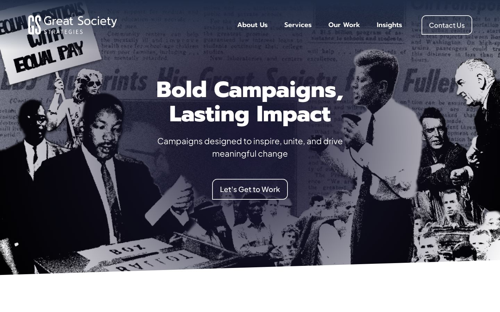
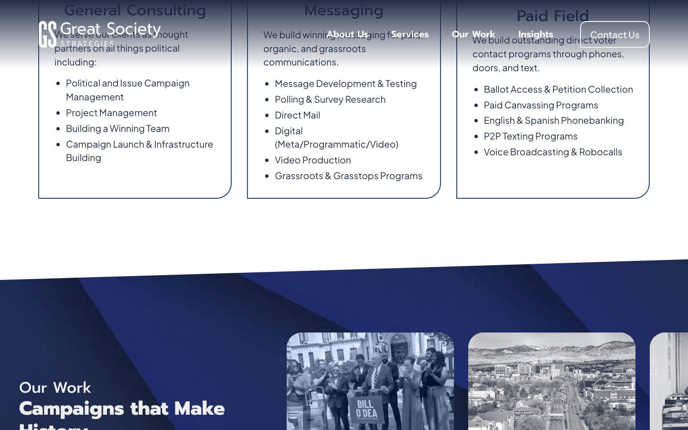
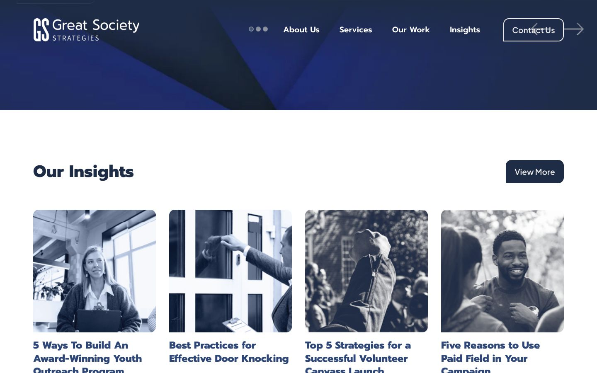
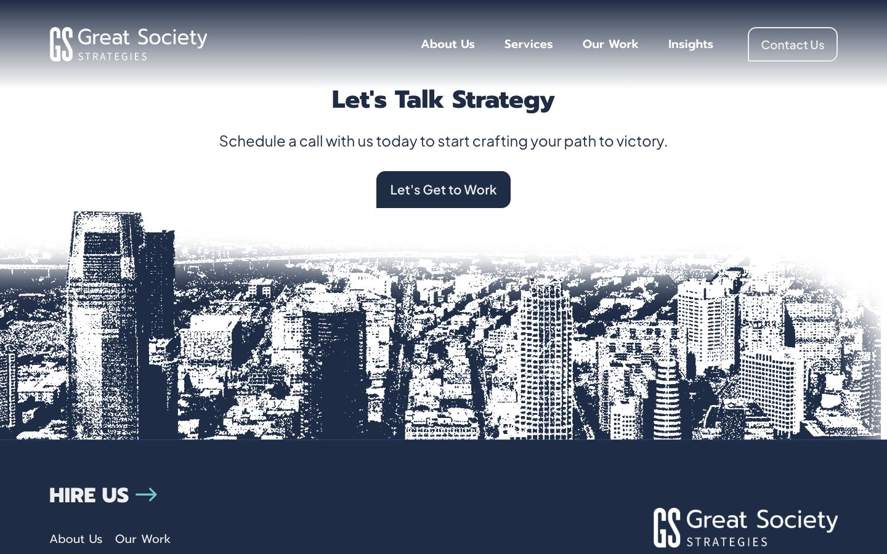
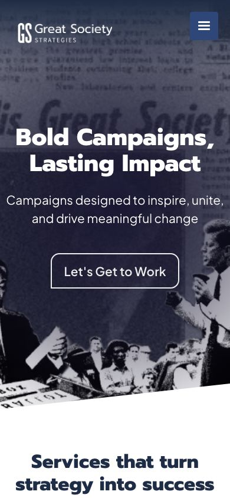

Great Society Strategies
Political consulting & campaign strategy
A site with archival character for a political consulting firm, organized around services, case studies and insights.

- Client
- Great Society Strategies
- Sector
- Political consulting
- My role
- Designer and developer
- Services
- Website design and build
- Engagement
- Independent, outside 97 Switch
The project
Great Society Strategies is a political consulting firm offering campaign management, communications and messaging, and paid field programs, from ballot access and petition collection to canvassing, phones and texting. I designed and built its website in Webflow, independently of 97 Switch.
The challenge
A consulting firm has a lot to explain: many services, many kinds of campaigns, and a point of view. The site had to make the offering easy to scan, prove the work through case studies, and keep a clear path to booking a call.
What I did
- 01
A hero with history
An archival collage of civil-rights era imagery behind a bold headline connects the firm's name to its legacy and sets a serious, confident tone.
- 02
Services made scannable
Three areas, General Consulting, Communications & Messaging and Paid Field, each list their offerings, so a campaign can find what it needs quickly.
- 03
Case studies that prove it
Featured stories, such as petition collection in Jersey City and a record-breaking canvassing campaign, show the work in action.
- 04
An Insights section
Articles on topics like paid field, door knocking and petition mistakes keep the site useful to campaign teams and support search visibility.
- 05
Clear calls to action
Contact Us in the header and Let's Get to Work throughout keep a conversation one click away.
The live site





Next project
SideGigster